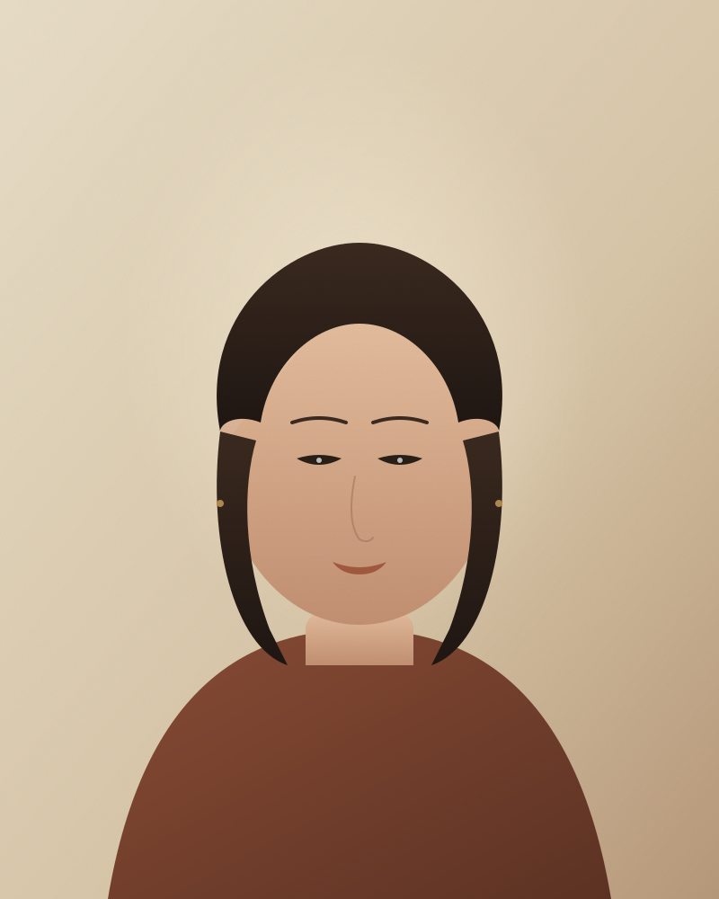

Et si changer
quelque chose
pouvait tout changer ?
Coach professionnelle certifiée et praticienne PNL. Une attention fine à ce qui se voit, ce qui s'entend, ce qui se respire en sourdine — et la précision juste pour faire bouger ce qui le demande, sans rien abîmer.

Le coaching, la PNL,
et toute une vie passée à accompagner
ce qui demande à changer.
Une attention fine à votre langue, à votre image intérieure, à la manière dont vous voyez, entendez, ressentez le monde — et la précision juste pour faire bouger ce qui le demande, sans rien abîmer.
Lire la suiteTrois manières de travailler,
un même fil.
Voir clair, entendre ce qui appelle, sentir ce qui retient — et se mettre en mouvement.
Coaching individuel
Un cycle pour traverser ce qui se présente — une transition, un cap qui se cherche, un projet qui mûrit lentement. On regarde ce qui veut bouger, on l'écoute, on le pose dans les mots, on avance.
- Transition
- Prise de poste
- Clarification de projet
- Confiance & affirmation
Coaching en entreprise
Pour les dirigeants, les managers et les équipes que le changement traverse — ou qui doivent en faire naître un. Un cadre confidentiel, et la précision de la PNL.
- Cadres & dirigeants
- Équipes en transition
- Qualité de vie au travail
- RQTH
Ateliers & collectifs
Pour associations, collectifs et organisations. Un format vivant, créatif, sensoriel : on regarde, on écoute ce qui se passe entre les personnes, on repart avec quelque chose à tenir dans la main.
- Changement & créativité
- Communication
- Leadership doux
- Sur mesure
Un cheminement,
en quatre temps.
Chaque accompagnement commence par un échange gratuit de trente minutes. Pour vérifier, simplement, que le courant passe — et que le moment est juste.
Premier contact
Trente minutes offertes, en visio. On s'écoute, on regarde si le courant passe — sans engagement, sans pression.
Cadre
On dessine ensemble les contours, le rythme, ce qui sera tenu pour vous. Un engagement réciproque, posé dès le départ.
Le travail
Séances de 60 à 90 minutes, en présentiel ou visio, espacées d'une à trois semaines. Outils du coaching, de la PNL, parfois de la marche.
Ancrage
Une dernière séance pour regarder le chemin, déposer ce qui a bougé, respirer — et la suite vous appartient.
Les témoignages authentiques des personnes accompagnées sont en cours de reprise sur la page dédiée. En attendant, le premier échange reste, à mes yeux, le seul moyen vraiment juste de se faire une idée.
Une matière vivante,
plutôt qu'un parcours.
Coach professionnelle certifiée, praticienne en PNL. Le reste se raconte autour d'un café, d'un thé, d'une marche — laissé volontairement en suspens. Mon métier, aujourd'hui, tient en une seule phrase : vous accompagner dans ce qui demande à changer.
Je travaille à Montpellier et en visio, avec des particuliers, des salariés et des collectifs. Le fil rouge ? Du mouvement, mais sans brutalité.
En savoir un peu plusLe bon moment, c'est celui où l'on ose en parler.
Trente minutes, en visio, sans engagement. Pour poser ce qui pèse — ou ce qui appelle — et voir, ensemble, si je suis la bonne personne pour vous accompagner.
Réserver mon premier échange →